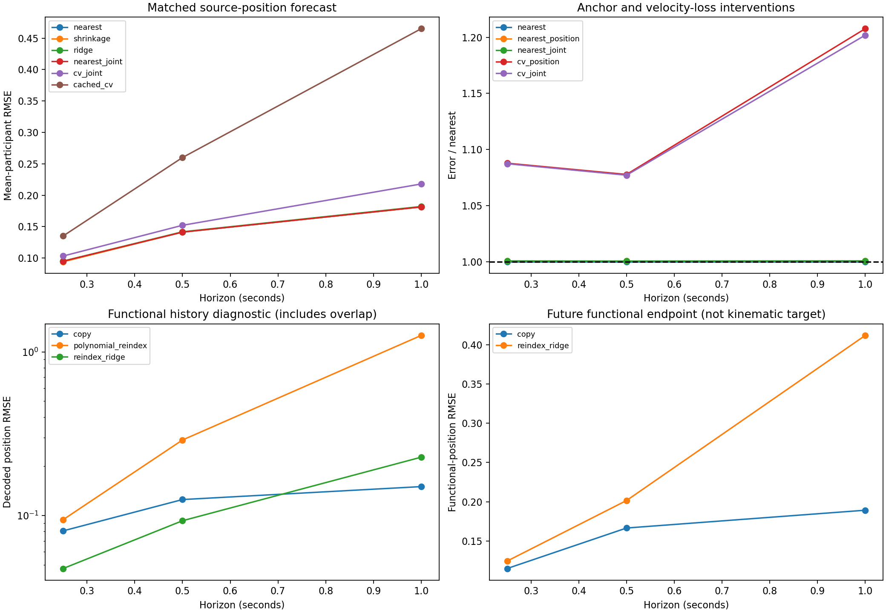

Open development. All forecast gates fail. No promotion or scientific acceptance.
221 matched validation histories; 201/183/146 supported targets; 146 common all-horizon histories. Source-derived targets, two exposed validation participants, zero independent physical references.

| Method | 250 ms | 500 ms | 1 second |
|---|---|---|---|
| nearest | 0.09497 | 0.14129 | 0.18135 |
| shrinkage | 0.09412 | 0.14138 | 0.18135 |
| decay | 0.09417 | 0.14165 | 0.18186 |
| ridge | 0.09522 | 0.14184 | 0.18209 |
| nearest_joint | 0.09504 | 0.14138 | 0.18149 |
| nearest_position | 0.09504 | 0.14138 | 0.18149 |
| cv_joint | 0.10326 | 0.15219 | 0.21795 |
| cv_position | 0.10331 | 0.15229 | 0.21900 |
| cached_cv | 0.13518 | 0.26000 | 0.46500 |
Mean-participant RMSE; neural results use median seed. The original 224-history benchmark is unchanged. Three histories fail the additional recent-observation support requirement.
148 passing tests; deterministic refit; 464 preserved prior hashes plus frozen Track 1 checks; sampled peak tree RSS 6.22 GiB. No source-data duplication.
ASSESSMENT.md · results.json · support.json · input_exclusions.json · per_episode.parquet · source_strata.parquet · prior_matched_comparison.json · memory_innovation.json · memory_endpoint.json · koopman_diagnostic.json · region_moments.json · blinded_review_queue.json · verification.json ·
Structured Koopman, neural innovation, weak-form objective training, and relational geometry remain unimplemented follow-on experiments. No full Track 2 or Track 3 launch.